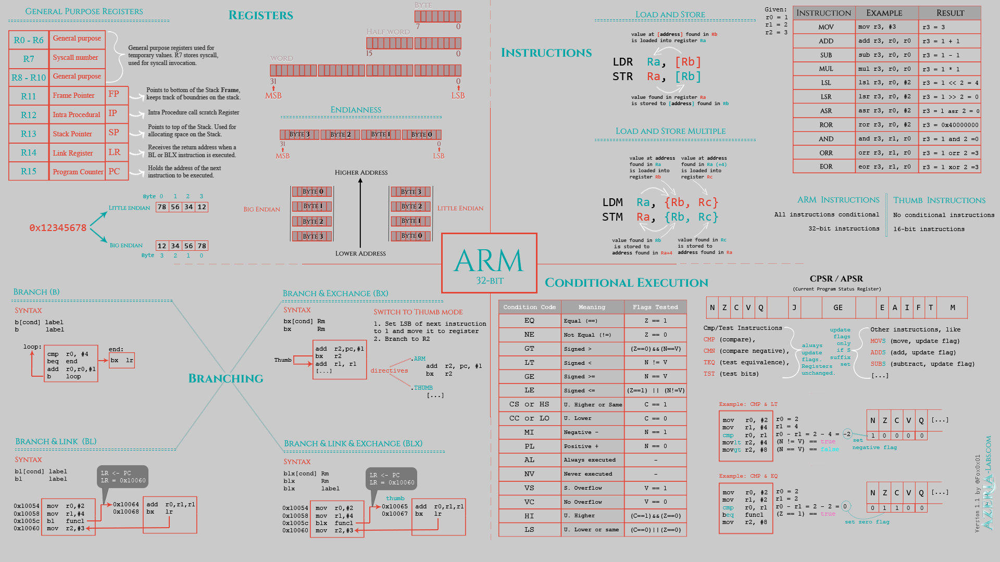
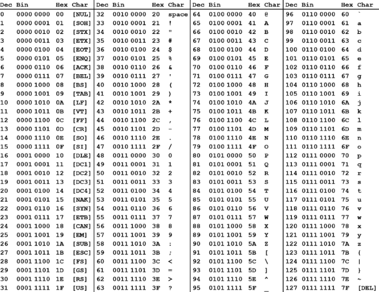
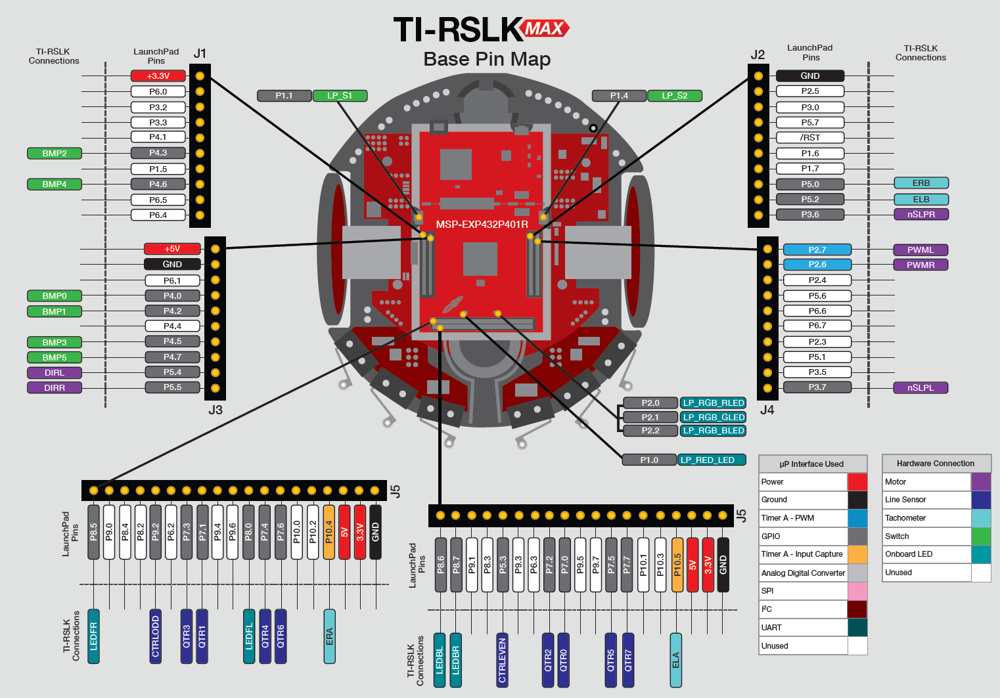

💎 Resources
Contents
💎 Resources#
Textbook Errata 😵#
Embedded Systems: Introduction to Robotics, Johnathan W. Valvano, First Edition, 2019. ISBN: 978-1074544300.
304-304, Program 13.2
NVIC->IP[2] = (NVIC->IP[2]&0xFFFFFF00)|0x00000040; // priority 2
should read
NVIC->IP[8] = 0x40; // priority 2
pp.310, Program 13.5 also has an error, but we are not going to use Timer32.
ARM Cortex-m Assembly cheat sheet is here#

C Programming Language, 2nd Ed. by Kernighan and Ritche#
Ritche invented the C programming language. This is the best book for C programming and the most popular one. Every C programmer must have this book. Amazon link

ASCII Table#

TI-RSLK Max Pin Map#

Dr. Valvano’s Lecture Videos#
TI Robotics System Learning Kit (TI-RSLK) Max Edition Lecture Videos
Check out this link for lecture videos we used in 2019. https://university.ti.com/en/faculty/ti-robotics-system-learning-kit/ti-rslk-max-edition-curriculum